| Static Grounding | IGG | |
|---|---|---|
| Target | Visible | Hidden or inactive |
| Goal | Localize | Reveal → Localize |
| Actions | CLICK | SCROLLMOVEWAITDRAGCLICK |
Agents can’t find what they can’t see.
- Current GUI agents struggle when targets are not yet visible.
- The main bottleneck is executing the reveal interaction.
- Fine-tuning on reveal trajectories teaches actions VLMs rarely try.
Abstract
GUI grounding benchmarks ask whether an agent can localize a target that is already visible in a static screenshot. Real interfaces often violate this assumption: a target may be off-screen, appear only after a state change or hover, remain occluded, or become actionable after a delay. This leaves the ability to recover target visibility unevaluated. To measure this reveal step, we introduce Interactive GUI Grounding (IGG), a benchmark in which an agent must first make the target visible through interaction and then click it. IGG contains 601 tasks across 16 controllable GUI environments and seven visibility-constraint sub-types, with a compact action space of scrolling, moving, dragging, waiting, and clicking. In our human study, participants achieve 94.6% accuracy, while GPT-5.5 reaches 79.4% and the strongest evaluated open-source VLM reaches only 31.6%. To identify the source of this gap, we conduct two controlled interventions. Telling Qwen3-VL which interaction to perform raises its accuracy only from 30.8% to 33.9%, whereas performing the interaction for the model raises it to 81.9%. The bottleneck is executing the reveal interaction, not recognizing the target once it is exposed. We further show that this capability is learnable, demonstrating that visibility recovery can be strengthened consistently across model families.
Make it visible, then click
Seven sub-types in three constraint types, each shown before and after the reveal action.
Viewport Constraint
Scroll-based Exploration
Off-screen
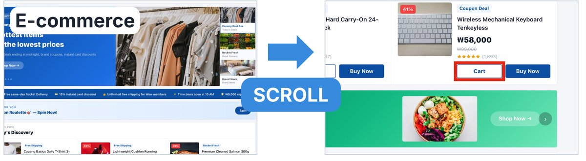
Key capabilities
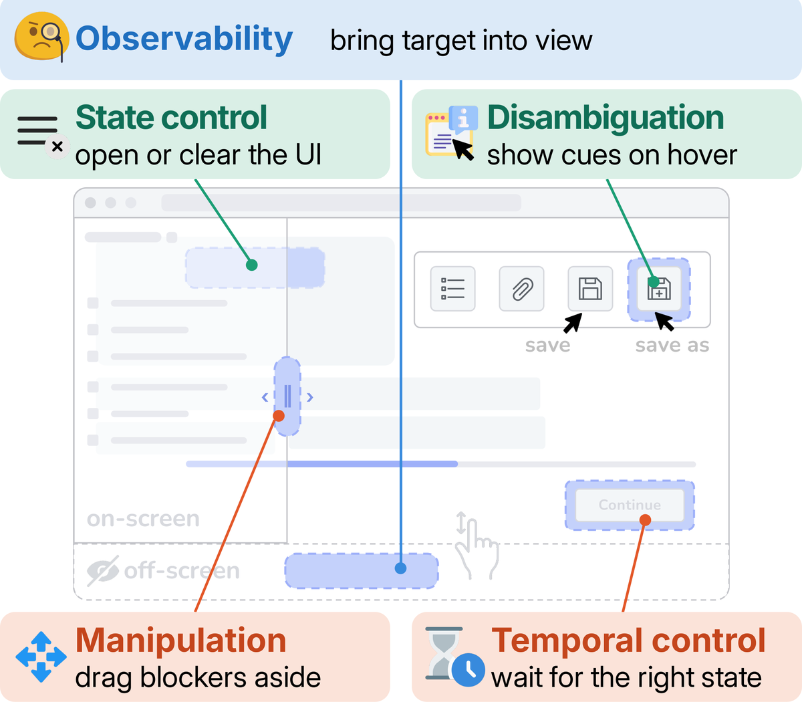
Multi-State Constraint
Visual Disambiguation
Label on hover
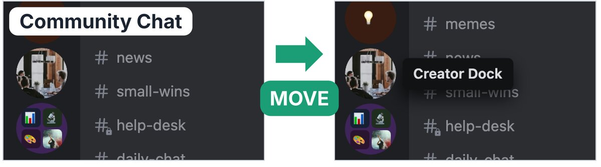
Hidden State Activation
In a closed menu
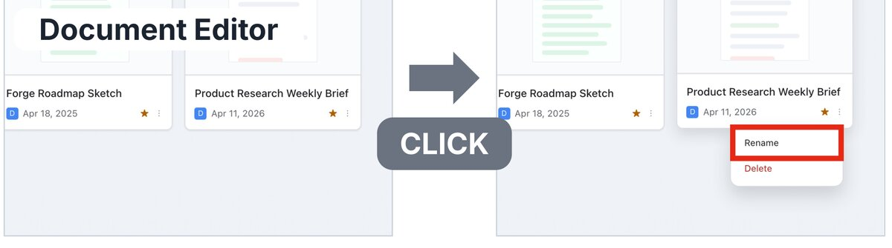
Removable Occlusion
Behind a popup
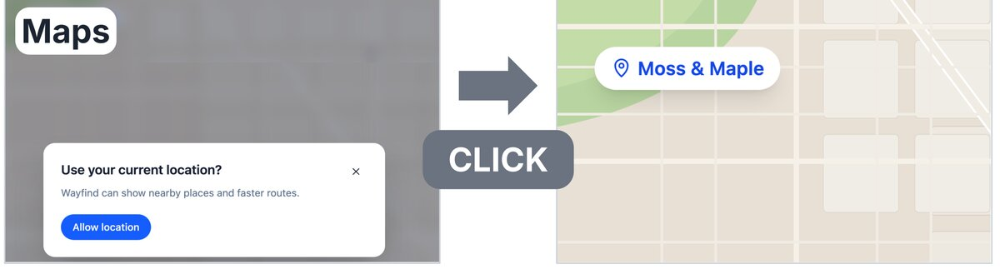
Temporal & Manipulation Constraint
Delayed State Activation
Activated after a delay
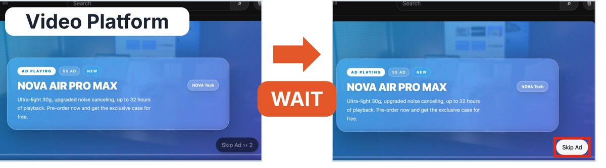
Dynamic Target Interaction
In a rotating banner
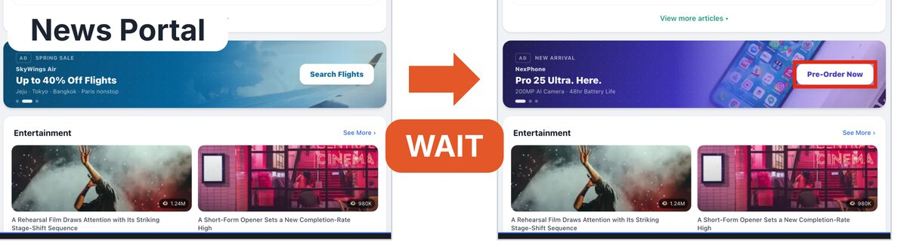
Movable Occlusion
Behind draggable elements
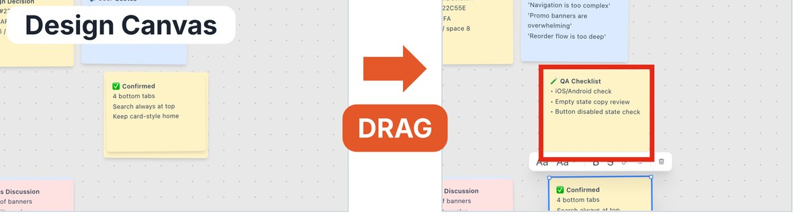
Environments & tasks
16 controllable web-app environments, 601 tasks, 7 sub-types.
| Category | Apps |
|---|---|
| Productivity | 5 |
| Dev & Design | 3 |
| Media | 3 |
| Lifestyle | 3 |
| Social | 2 |
| Total | 16 |
What do VLMs struggle with?
Task accuracy by sub-type (≤8 actions per task).
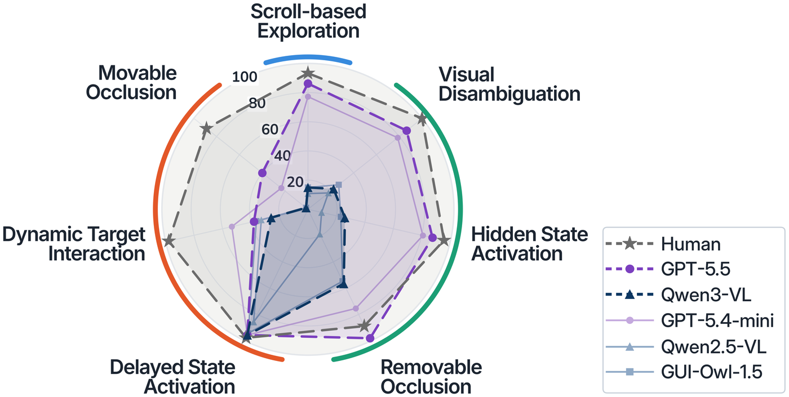
VLMs struggle with hidden targets
Most failures occur before the target becomes visible
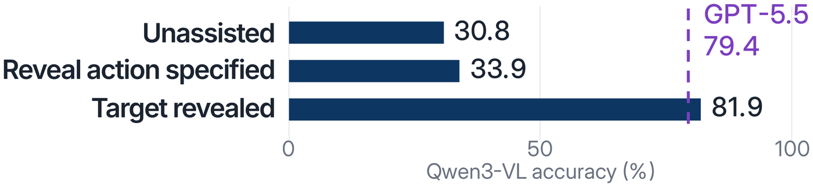
Base VLMs mostly click, as if the target were visible

Reveal interactions are learnable
Training improves task accuracy across all three VLMs
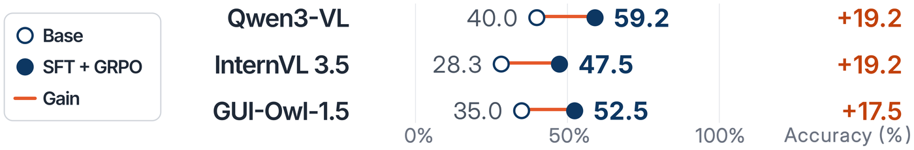
Training improves most sub-types and enables DRAG
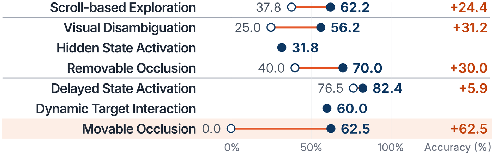
BibTeX
@inproceedings{kim2026igg,
title = {{IGG}: A Benchmark for Interactive {GUI} Grounding under Visibility Constraints},
author = {Kim, Kyeongseon and Son, Jiyeon and Oh, Tae-Hyun},
booktitle = {Proceedings of the 2026 Conference on Empirical Methods in Natural Language Processing (EMNLP)},
year = {2026}
}